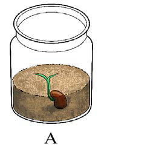
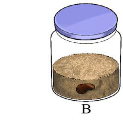

Jaribio namba 2: Kuchunguza umuhimu wa hewa katika ukuaji wa mmea
Lengo:
Kuthibitisha kuwa hewa ni muhimu katika ukuaji wa mmea
Mahitaji:
Mbegu za maharagwe au mchicha, chupa mbili zenye udongo wenye rutuba, maji, kifuniko cha plastiki au kioo, rula, daftari na kalamu
Hatua
Panda mbegu mbili kwenye chupa mbili zenye udongo wenye rutuba na weka alama katika kila chupa kwa kutumia herufi A na B.
Mwagilia maji katika chupa zote kila siku.
Chupa ya kwanza (A) iwekwe sehemu yenye mwanga wa jua na hewa ya kutosha kama inavyoonekana au inavyoelezwa katika kielelezo namba 3.
Chupa ya pili (B) ifunikwe vizuri kwa kifuniko cha plastiki au kioo kama inavyoonekana au inavyoelezwa katika kielelezo namba 3.

A

B
Kielelezo namba 3: Uchunguzi kuhusu umuhimu wa hewa katika ukuaji wa mmea
Chunguza na pima urefu wa mmea katika chupa zote kila siku kwa siku kumi na nne.
Linganisha ukuaji wa mimea katika chupa zote mbili.
Matokeo: Andika matokeo ya jaribio ulilolifanya.
Hitimisho: Andika hitimisho la jaribio ulilolifanya.